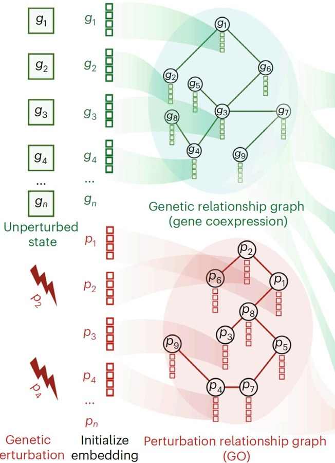
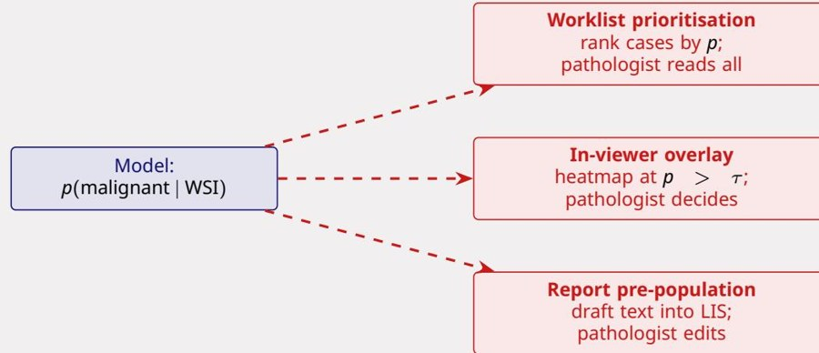
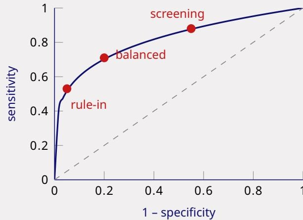
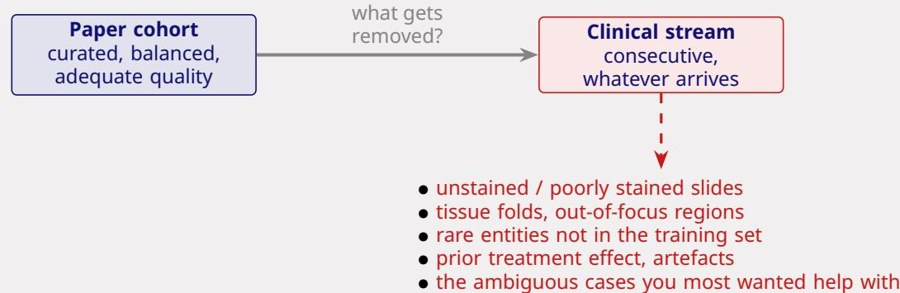

5 · Clinical workflow integration#
A good model is not a good product. This page defines the vocabulary of deployment, one decision at a time, with a question after each.
1. Intended use is the first question#
Explanation. Intended use is the formal statement of what a device is for: which patients, which decision, and whether a human decides. CE-IVD (in-vitro diagnostic) is the European mark that a product may be sold for a stated clinical use. Adjunct means the clinician reviews everything anyway; triage only changes the order; rule-out means a negative result may skip a human read; QC checks that the sample or slide is usable.

Every stage is a possible product: triage at request, pre-screen of the slide, overlay during reading, or a draft report. Each one is a different intended use with different evidence.
Check yourself
A melanoma model is validated on 1,200 curated slides and offered for 14,000 mixed skin specimens/year. Which specimens are in scope, and what is missing from its output?
Answer
Only melanocytic lesions: 18% × 14,000 = 2,520 specimens/year, at ~3 slides each ≈ 7,560 slides; the other 82% have no validated output. The output is one probability per slide, but a report needs subtype, Bresenham thickness, ulceration, mitotic rate, margins, lymphovascular invasion, regression, and a case-level conclusion — none of which it provides, nor uncertainty.
2. Four integration patterns#
Explanation. Where the model sits relative to the human decides its failure mode:
| Pattern | The model acts | Main failure mode | Example |
|---|---|---|---|
| Triage / pre-screen | Before the human, reorders the queue | Delay (a missed case is still read) | Worklist prioritisation |
| Concurrent assistant | Alongside the human, in the viewer | Automation bias, anchoring | Overlay during reading |
| Second reader / QC | After the human, flags discrepancies | Alert fatigue, over-calling | Report discrepancy checking |
| Autonomous | Instead of the human | Undetected error reaches the patient | Retinal screening |
Validation depth, regulatory burden and liability all increase as you move down the table.
Human in vs on the loop. In the loop: every output passes through a human — risk is automation bias, and the human must keep the unassisted skill. On the loop: the system acts and the human monitors — risk is vigilance decrement, because monitoring a reliable system is something humans are bad at.

Identical \(p(\text{malignant}\mid\text{WSI})\) underneath. The product changes the user, the failure mode and the evidence required — and in the EU can change the device class.
Check yourself
A model is sold as an autonomous retinal screener and deployed in primary care where no ophthalmologist is present. Who is accountable, and what must the validation show?
Answer
Arguably the manufacturer, because the primary-care physician cannot independently judge a retinal image and should not carry the liability. Validation must be prospective and site-specific, at the operating point used, with a defined escalation path and drift monitoring; autonomous use needs the deepest evidence, not the shallowest.
3. The output unit decides the aggregation#
Explanation. The unit of output is what the score refers to: a slide, a case (several slides/cores), or a patient. If the decision is case-level, you must aggregate slide scores. For triage, use the maximum slide score per case — any suspicious slide should raise the case. For a rule-out, the case is negative only if every slide is below the threshold, which is also the maximum rule.
Check yourself
A prostate case has 12 cores on 6 slides. The model outputs a probability per slide. How do you turn this into a case decision for triage, and why not use the mean?
Answer
Use the maximum slide probability: suspicious cases go first, so one positive core should raise the case. The mean would dilute a single positive core across many negative slides and could hide exactly the case that needs attention.
4. The operating point is a clinical decision#
Explanation. The operating point is the threshold that turns a score into an action. Lowering it catches more positives (higher sensitivity) but flags more negatives (lower specificity, lower PPV, more workload). PPV and NPV at that threshold depend on prevalence. AUROC summarizes all thresholds and therefore does not choose one.
Papers report AUROC and balanced accuracy; deployment needs sensitivity/specificity at the shipped threshold, PPV/NPV at the true prevalence, patient-level outcomes (not slide-level), worst-subgroup performance, and operational endpoints (turnaround time, override rate, interval cancers).

The curve is the model; the point is the clinical policy. Rule-in accepts many false positives to catch cases; screening accepts many false positives to miss almost nothing.
Check yourself
10,000 slides/year (40/day), 5% prevalence. A: sens 0.99, spec 0.70. B: sens 0.95, spec 0.90. C: sens 0.85, spec 0.98. Compute PPV and missed positives (FN) for A and C, then choose for (i) an assistant where every slide is read, and (ii) a rule-out where negatives are not read.
Answer
A: TP 495, FN 5, FP 2,850, PPV = 495/3,345 ≈ 14.8%, NPV 99.92%. C: TP 425, FN 75, FP 190, PPV = 425/615 ≈ 69.1%, NPV 99.20%. (i) Assistant → A: a false positive costs seconds, a false negative is a missed metastasis. (ii) Rule-out → A or B; the harm is the FN count (A 5, B 25, C 75 per year), so C is defensible only if the lab accepts ~75 unseen metastases. Threshold: clinical lead with lab management and quality sign-off.
5. A CE mark covers only the validated use#
Explanation. A cut-off is the value of a biomarker that separates categories (e.g. PD-L1 at 1% and 50%). ICC (intraclass correlation) measures agreement on a continuous score across its whole range. Categorical agreement measures agreement at the clinically decisive cut-offs. Validation must use a reference standard independent of the model — usually a consensus of several pathologists.
Check yourself
A PD-L1 model is CE-IVD with ICC 0.90, but your lab uses a different antibody, stainer, scanner and cytology cell blocks. What must you validate, with what metric and reference standard?
Answer
Anything outside the vendor's intended use is your responsibility: antibody, stainer, scanner and cytology blocks. ICC 0.90 is the wrong metric because it can hide poor agreement at the cut-offs; report categorical agreement at 1% and 50% (accuracy, kappa, sensitivity/specificity with confidence intervals) plus a Bland–Altman plot near the thresholds. Use ≥60 consecutive routine cases per application, enriched near the cut-offs; reference standard = consensus of ≥3 pathologists blinded to AI, not a single sign-out.
Four kinds of validation. Internal: held-out split from the same source — did it learn the training distribution? External: an independent cohort from another centre/scanner — does it transfer? Prospective: consecutive, unselected, real-time cases — does it work on tomorrow's patients? Site-specific clinical: local cases on local equipment before go-live. Professional guidance (CAP/ASCP/API 2022) is explicit: validation should emulate the lab's real environment, with at least 60 routine cases per application.

Unstained slides, folds, artefacts, rare entities and the genuinely ambiguous cases are exactly what gets excluded from a paper cohort — and exactly what the deployed model meets.
Check yourself
A paper reports internal validation 0.94 and external 0.81. Which number would you quote to the lab that is buying it, and what is still missing?
Answer
The external 0.81 is the better estimate of transport, but even that is not the local number. Still missing: site-specific validation on the lab's scanner, stainer and case mix, plus prospective consecutive cases, calibration, and a monitoring/exit plan.
6. Monitoring exists to catch drift — including meaning drift#
Explanation. Drift is a change in the data distribution or in the relationship between score and outcome. Monitoring watches inputs, score distributions, and outcomes. But a change in clinical meaning (a new therapy makes 0 versus 1+ decisive) can occur with no change in the model or its numbers, so no dashboard fires.
| Mechanism | Cause | Detectable by |
|---|---|---|
| Covariate shift | New scanner, stainer, protocol, reagent lot | Input statistics (stain vectors, focus scores) |
| Label / prior shift | Case mix or referral pattern changes | Output distribution vs baseline |
| Concept drift | A guideline changes what the label means | Only by human audit |
| Feedback loop | The model influences the labels it is later trained on | Very hard |
The silent failure: none of these produce an error message; the model keeps returning confident, plausible output.
Check yourself
A HER2 model was validated treating 0 and 1+ as "negative". Case mix changes and a HER2-low therapy makes 0 versus 1+ decisive. Is the old validation still worth anything, and what do you do?
Answer
Almost nothing: it measured negative versus positive, never 0 versus 1+. Nothing flags it because the model output and thresholds did not change — only what the boundary means. Revalidate by enriching 0/1+ cases (including post-neoadjuvant), using a consensus reference standard, measuring agreement between 0 and 1+ at the therapy decision, and pre-specifying acceptance. Meanwhile, compare score distributions within matched subgroups to separate patient change from model drift.
7. Human factors: agreement is not accuracy#
Explanation. Automation bias is the tendency to accept a machine's suggestion, especially when it is usually right. Override is a clinician rejecting the model. A rising agreement rate can mean better quality — or that people stopped checking.
Check yourself
Agreement rises from 91% to 98.6%, reporting time falls 22%, seniors stop using the system and juniors are lost during an outage. Does this prove benefit?
Answer
No. Rising agreement is consistent with automation bias, not calibrated trust. Distinguish with blinded independent reads, audits that include AI-error cases, accuracy before versus after, override outcomes in both directions, and deliberately inserted errors. Redesign: AI as second reader or prioritisation, no speed target, one-click logged dismissal, output after the first read, calibrated risk statements, and an opt-out.
8. The business case: minutes are not cash#
Explanation. FTE = full-time equivalent, a person's annual working time (loaded cost ≈ €200k in this case). Tariff = the fixed price paid for a procedure. Saved clinician minutes are capacity, not money, unless they are converted into something (filling a vacancy, avoiding a locum) or the tariff is paid per case.
Check yourself
1,800 cases/year; licence €25/case; IHC in 30% at €60, 40% relative reduction; 12 min/case at €150/h, 20% saved; validation 0.1 FTE; integration €40,000. Does it pay for itself in year 1?
Answer
Licence €45,000. IHC saved: 0.30 × 1,800 × 0.40 = 216 cases × €60 = €12,960. Time saved: 1,800 × 0.2 h = 360 h, 20% = 72 h × €150 = €10,800. Validation ≈ €20,000. Year 1: 12,960 + 10,800 − 45,000 − 20,000 − 40,000 = −€81,240 (steady state ≈ −€41,240). It does not pay for itself unless freed capacity becomes cash — filling two vacancies or avoiding locums. The lab pays; the insurer pays the bundled tariff; urology and patients capture the faster turnaround.
9. The model that cannot be proven wrong#
Explanation. A reference standard is the best available truth. If only cases where the model said "not needed" are audited without doing the test, no false negative can ever be found — verification bias. The prediction paradox: acting on a prediction destroys the evidence needed to check it.
Check yourself
A vendor reports zero discrepancies among cases where IHC was "not needed" and claims 100% NPV. Why is this not evidence, and how would you design a real evaluation?
Answer
Only cases where IHC was not ordered were audited, and the pathologist saw the AI suggestion (anchoring); no reference standard could reveal a missed diagnosis, so false negatives were never measured. Design: randomise boundary cases to IHC versus no IHC (MASAI-style), or send a random sample of "not needed" cases to IHC; log AI output and clinical action separately; pre-register a non-inferiority margin and a safety endpoint (missed significant cancers). Ethically it is minimal risk because tissue is already taken.
If you remember one thing
For any deployment question: intended use → unit of output → validation → operating point → monitoring → economics, then name who owns the residual risk.